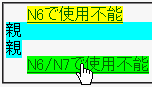
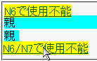

親要素を相対配置に、子要素を絶対配置にして、子要素のボックスが親要素のボックスをはみ出すように配置したとき、子要素内のリンクやフォームコントロールが機能しなくなる場合がある。
<div style="position:relative; top:1em; background:aqua;">親 <div style="position:absolute; top:-1em; background:yellow;"> <a href="b019.html">N6で使用不能</a> </div></div> <span style="position:relative; top:1em; background:aqua;">親 <span style="position:absolute; top:1em; background:yellow;"> <a href="b019.html">N6/N7で使用不能</a> </span></span>
2つのリンクがあります。前者はtopプロパティに負の値を指定した場合の例、後者は祖先に相対配置されたインライン要素が存在する場合です。リンクが機能するかを確認してください（:hover擬似クラスで背景色を変えています）。
リンク文字列にマウスポインタを乗せたときの反応です。
WinIE6.0標準モード
Netscape7.1標準モード
Netscape6.2.3、Netscape7.1で不具合の発生を確認しました。